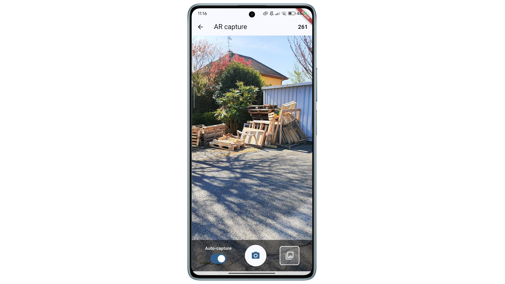
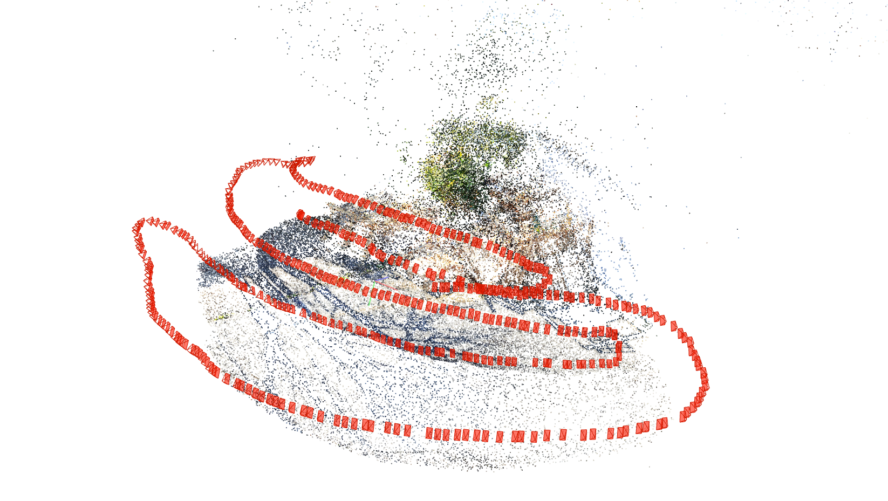
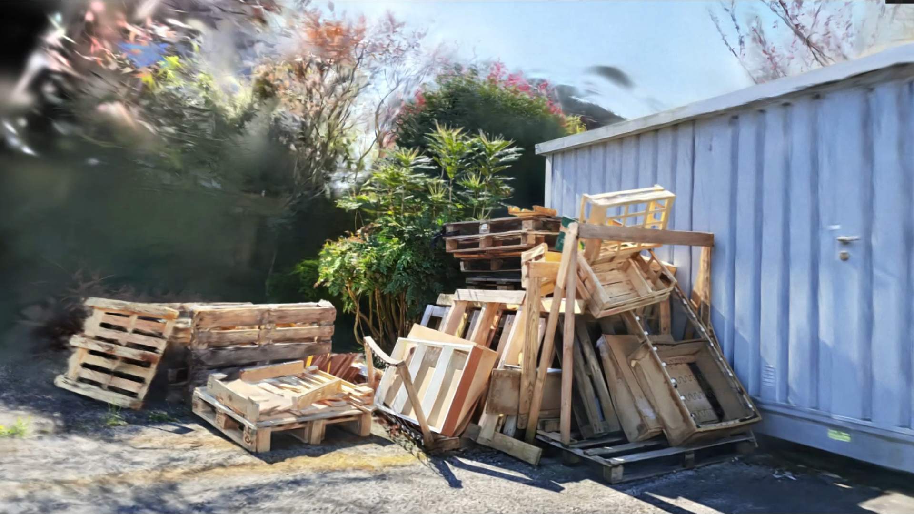

RealityClone
Pipeline complet pour l’entraînement et la visualisation de Gaussian Splatting




À propos du projet
RealityClone est un projet étudiant réalisé en équipe, visant à automatiser l'acquisition, l'entraînement et la visualisation de modèles 3D à partir d'images via la technique du Gaussian Splatting. Le projet se compose de trois modules interconnectés, chacun développé avec des technologies différentes, offrant une expérience complète du back-end au front-end en passant par l'AR et la VR.
📱 1. Application mobile de capture (Flutter + AR)
Développée avec Flutter et le plugin AR Flutter Plugin, cette application permet de :
- Capturer des images avec leur position et orientation en temps réel grâce à la réalité augmentée.
- Choisir entre un mode manuel ou un mode automatique (capture déclenchée par un seuil de déplacement).
- Gérer une galerie de photos avant l’envoi (suppression possible en cas de flou ou doublon).
- Activer une option pour recalculer les poses avec COLMAP si les données AR sont inexactes.I
- Interagir avec le serveur pour envoyer les données, consulter les modèles existants, les renommer ou les supprimer.
🌐 2. Serveur Express.js (Node.js + Python + SQLite)
Le serveur joue le rôle de pont entre l’application mobile et le pipeline d’entraînement :
- Expose une API RESTful pour recevoir les données de capture.
- Lance automatiquement les étapes de traitement :
- Reconstruction structure-from-motion via COLMAP
- Entraînement du modèle via un script Python de Gaussian Splatting
- Gère une base SQLite pour stocker les modèles créés, accessibles depuis le mobile ou la visionneuse.
🖥️ 3. Visionneuse VR (Unity)
L’application desktop, développée avec Unity, permet de :
- Se connecter à l’API pour récupérer la liste des modèles disponibles.
- Visualiser un ou plusieurs modèles en réalité virtuelle, avec un système de sélection.
- Fournir une interface immersive pour explorer les reconstructions 3D issues des captures.
🧠 Aspects techniques et apprentissages
- Utilisation combinée de Flutter, Unity, Node.js, Python et SQLite, avec une communication API fluide entre les composants.
- Intégration de réalité augmentée (AR) pour la capture d'images avec pose, et réalité virtuelle (VR) pour la visualisation.
- Automatisation complète du pipeline : capture ➝ envoi ➝ entraînement ➝ visualisation.
- Gestion des formats, compression (zip), transmission multipart, et appels réseau complexes.
- Prise en compte de l’expérience utilisateur, avec suppression de photos ratées, gestion des erreurs, et feedback visuel/haptique.